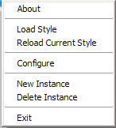
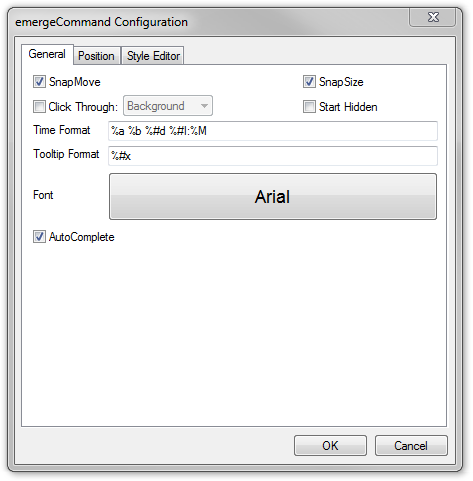
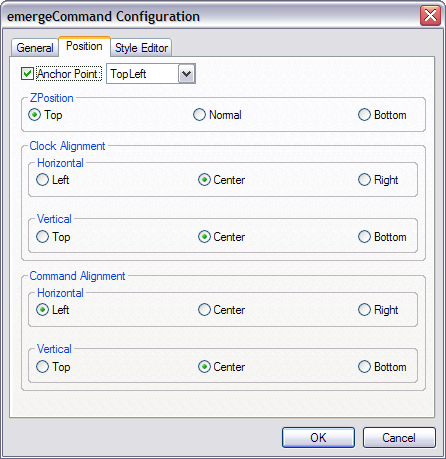

| About |
emergeCommand is a clock / command line launcher applet for Emerge Desktop. By default it displays the date and time in a configurable format.
When the left mouse button is clicked on the text, it allows for the typing in of a command to execute.
| Configuration |
emergeCommand is configured by pressing the Ctrl key and right-clicking on the command window. This opens the configuration menu:

About displays the module's version, the current style's path and filename and author.
Load Style allows the user to browse and select a Style File.
Reload Current Style allows to reload the current style after editing.
Configure displays the emergeCommand configuration dialog box.
New Instance allows the creation of a new emergeCommand window.
Delete Instance deletes this emergeCommand window.
Exit closes the module. It can be restarted by highlighting it and clicking on the Start  button in the Launch Applet dialog box (see emergeCore).
button in the Launch Applet dialog box (see emergeCore).
After selecting Configure, the configuration dialog box opens. The first tab is General:

SnapMove makes the window snap to the edges of other applets' windows or the edges of the screen when moving it.
SnapSize makes the window snap to the edges of other applets' windows or the edges of the screen when changing its size.
Click Through allows clicking "through" the window (i.e. allows clicking on whatever is behind it). It has two modes: Full (the whole window is "transparent" to mouse input), or Background (only the background area is "transparent" but the user can click on the icons in emergeTray, emergeTasks, emergeLauncher, the text in emergeCommand, emergePower, the active mini-window in emergeVWM, the graphs in emergeSysMon).
Important notes: 1) Full Click Through works for any level of opacity, from opaque to fully transparent; 2) Background Click Through automatically sets the background to transparent but does not change the style, this is a known limitation; 3) To manipulate an applet set on Full Click Through, the user must press the Shift key: Shift+Ctrl+LeftClick to move the applet, Shift+Ctrl+RightClick to get the configuration menu and Shift+Alt to resize the applet.
Start Hidden will keep the emergeCommand window hidden starting after the next reboot. The visibility of one applet can be toggled with ShowApplet internal command, see that page for details.
Time Format allows to select the date and time format according to the options described in Time / Date Format Variables. Alternatively it can show a user defined text or nothing at all.
Tooltip Format allows to select the date and time format for the tooltip according to the options described in Time / Date Format Variables. Alternatively it can show a user defined text or nothing at all. The tooltip is displayed when the cursor hovers over the emergeCommand window.
Font brings up the font dialog box, which allows to select Font, Font style and Size of the font displayed both in the command and clock windows:

AutoComplete completes previously typed commands as the user types, so that a command previously entered doesn't need to be completely retyped.
The configuration dialog box's second tab is Position:

Anchor Point gives the choice of anchoring the window to the monitor's Top Left, Top Center, Top Right, Middle Left, Middle Center, Middle Right, Bottom Left, Bottom Center, or Bottom Right.
ZPosition defines the relative position of the window in the Z axis (i.e. from the screen to the user) and can be set to always on the Top, Normal (behaves as a regular program window), or always at the Bottom.
Clock Alignment sets the clock alignment horizontally on the Left, in the Center, or on the Right, and vertically on the Top, in the Center, or at the Bottom.
Command Alignment sets the command alignment horizontally on the Left, in the Center, or on the Right, and vertically on the Top, in the Center, or at the Bottom.
For the configuration dialog box's third tab, see Style Editor.
| Usage |
Left-clicking on the emergeCommand window will display a cursor which allows the typing of a command or path. Pressing Enter executes the command, or, if a path is entered, an Explorer window opens at the specified path.
You can also specify the Special Folders My Computer, My Documents, My Network Places, Control Panel, or Recycle Bin, or any of the Emerge Desktop's Internal Commands.
When prepended with "@", a command specifying an executable allows the execution of the command from an administrator account after selecting the administrator’s user name (or typing an other existing user name) and entering the password in the Run As dialog box.
In the emergeCommand window, the up and down arrow keys cycle through the command history.
To move the window, the user must press the Ctrl key, left-click on the window, and drag it to another location.
To resize the window, the user must press the Alt key, left-click on one edge of the window, and drag it to a new size.
The window position and size are stored in the applet's xml file, which is located in the User Profile folder under "\Application Data\Emerge Desktop\files", in a subfolder with the same name as the current Theme. See Theme Manager for more details.